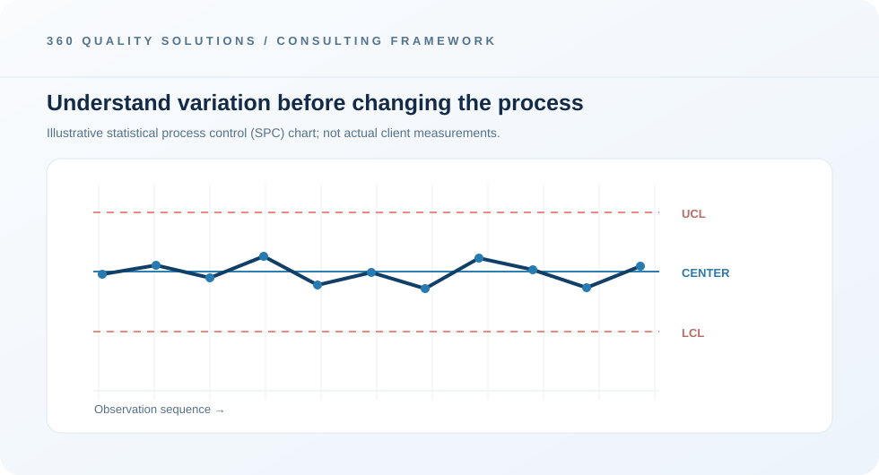

Validate the data
Check definitions, completeness and measurement quality.
STATISTICAL ANALYSIS · PROCESS IMPROVEMENT
Make variation visible and prioritise improvement using meaningful operational data.
Request a consultationBetter quality decisions begin with useful data. 360 Quality Solutions helps teams organise operational information, analyse variation, and communicate results to support measurable process improvement.
The statistical approach depends on your question, the quality of the available data and the characteristics of the process. Where suitable, analysis may cover descriptive statistics, trends, control charts, process capability or comparisons between process conditions. Findings are presented with clear assumptions and practical implications.
Statistical analysis supports more confident decisions by showing patterns and variation that a single average can hide. Methods are selected based on the quality of the data and the decision being made.

Check definitions, completeness and measurement quality.
Examine trends, distributions or process behaviour where appropriate.
Communicate findings and feasible improvement priorities.
BEYOND COMPLIANCE
Quality is also about understanding your processes. Our statistical analysis capability helps make variation visible, identify emerging trends and focus improvement efforts where the evidence points.
Clarify the process question and required outcome.
Check data suitability and apply methods supported by the evidence.
Explain insights, assumptions and the next operational decisions.
Yes, process data can be assessed when suitable records are available and the project scope is agreed.
Control charts and related SPC methods can be considered where the data structure, sampling and process conditions make them appropriate.
Existing spreadsheets can be a starting point. Data structure and quality should first be checked to confirm suitable analysis.
Share your operational goals and we can discuss a suitable starting point.